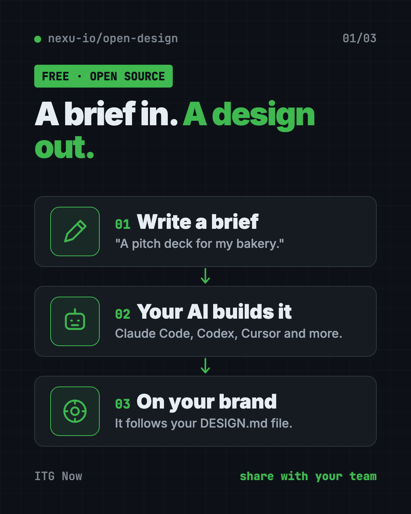
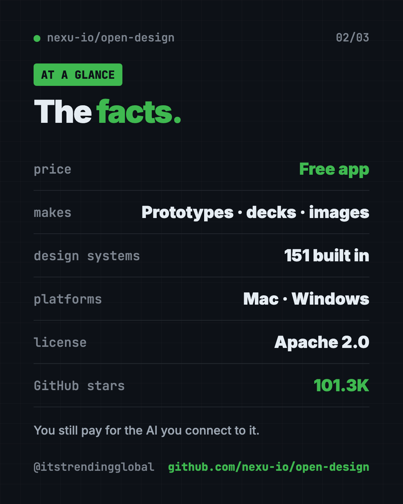
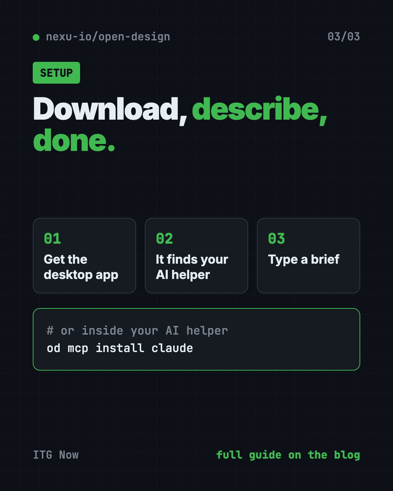

OpenDesign: Free Open Source AI Design Tool for Teams
- Published 15 Oct 2026
- Updated 16 Oct 2026
- 7 min read
- License Apache-2.0
- By the ITG Now team
OpenDesign is a free, open source AI design tool that turns a short brief into a prototype, slide deck, dashboard or image. It uses the AI coding helper you already have, like Claude Code, Codex or Cursor, and follows your brand's colors and fonts.
If you want to see an idea before paying anyone to build it, this guide shows what OpenDesign makes, how to install it, and what to watch for.
Key takeaways
- Free and open source. Apache 2.0 license. An optional paid cloud plan exists, but you don't need it.
- Uses your own AI. OpenDesign doesn't ship its own AI. It drives Claude Code, Codex, Cursor, Copilot and many others.
- On-brand by default. It ships with 151 design systems and reads your brand rules from a file called
DESIGN.md. - Makes five kinds of things: prototypes, live dashboards, slide decks, images and short videos.
- Desktop app for Mac and Windows. Linux users run it from source for now.
What is OpenDesign?
OpenDesign calls itself a "collaborative AI design agent workspace." In plain words: you write what you want, an AI builds it, and your team can comment and ask for changes in the same project.
The clever part is that it doesn't come with its own AI. Instead, it uses the coding helper already on your computer. The README says Claude Code, Codex, Cursor, Copilot, Hermes, Kimi and more can all power it. You can switch between them with one click.
Every design reads a file called DESIGN.md. That's your brand rulebook: colors, fonts, spacing. So the results look like your brand, not a generic template.

What can OpenDesign make?
The README shows five kinds of output:
- Prototypes. Clickable web, desktop and mobile screens. You can hand them to Cursor, Codex or Claude Code later to turn into a real app.
- Live dashboards. KPI walls and meeting briefings you can tweak in place.
- Slide decks. 15 deck templates and 36 themes. Export to HTML, PDF, PowerPoint (PPTX), ZIP or Markdown.
- Images. 93 ready-made prompts, like a hand-drawn city food map or a cinematic still.
- Videos. Short motion graphics through HyperFrames, an open-source video tool from HeyGen. It ships with 11 video templates.
How to use OpenDesign (real examples)
- Pitch an app idea. Type "a three-screen mobile app for booking dog walkers." Get a clickable prototype to show investors or friends.
- Make the weekly update deck. Pick a deck template, paste your notes, and export to PowerPoint or PDF.
- Build a sales dashboard mock-up. Show your team what the numbers page could look like before anyone writes real code.
- Keep everything on-brand. Drop in your brand's
DESIGN.mdonce. Every new design follows it. - Refresh an old product. The README says you can hand it an existing codebase plus your
DESIGN.md, and the AI updates your real components to match the brand.
💡 Tip: Start from one of the 151 built-in design systems that feels close to your brand. Then tweak the colors and fonts. It's faster than writing a brand file from scratch.
Is this open source AI design tool free?
The software is free and open source under the Apache 2.0 license. You can use it, change it and use it at work.
But it needs an AI to do the work. If you use Claude Code or Codex, you pay for those as usual. You can also plug in your own API key, or run local models through tools like Ollama or LM Studio.
There's also an optional paid service called OpenDesign Go, with credits for hosted AI models. You don't need it to use the app.
Does OpenDesign keep my work private?
Mostly. Projects can run on your own computer or your own server. But anything you send to a cloud AI model goes to that company.
⚠️ Heads up: The README says product analytics and session replay only run if you agree. But scrubbed safety and reliability telemetry (usage reports) is always on.
OpenDesign at a glance
| Price | Free app; you pay for whatever AI you connect |
| Works offline | Only with a local AI model, like Ollama |
| Platforms | Mac (Apple Silicon and Intel), Windows; Linux from source |
| License | Apache 2.0 (open source) |
| Works with | Claude Code, Codex, Cursor, Copilot, OpenCode, Hermes, Kimi and more |
| Built-in | 151 design systems, 15 deck templates, 36 themes, 93 image prompts |
| Best for | Founders, marketers and small teams who want to see ideas fast |

How to install OpenDesign
The README gives two main paths.
Option 1: The desktop app (recommended)
This is the easiest way. No coding tools needed.
- Go to open-design.ai or the GitHub Releases page.
- Download the version for your Mac (Apple Silicon or Intel) or Windows PC.
- Install and open it.
- It finds the AI coding helpers on your computer automatically.
- Type a brief and start designing.
Option 2: Inside your AI coding helper
You can also use OpenDesign without opening the app. You call it from inside Claude Code, Codex, Cursor and others. Copy and paste this into Terminal, changing claude to your helper's name:
od mcp install claude
Then, inside your AI helper, try this:
Use open-design to generate a landing page with the Linear design system
⚠️ Heads up: On Mac, typing
odcan run a built-in Apple tool with the same name instead. The README says desktop app users should open Settings → MCP server in the app and copy the ready-made snippet instead.
Let Claude or Codex set it up for you
Claude Code and OpenAI Codex are AI helpers that run in your Terminal. They can do setup steps for you while you approve each one.
Copy and paste this:
Please help me set up OpenDesign from github.com/nexu-io/open-design.
1. Read the README's Quick start section first.
2. Tell me whether I should use the desktop app or the "od mcp install" route on my computer.
3. If I'm on a Mac, check whether "od" points to Apple's built-in tool before running anything.
4. Connect OpenDesign to the AI helper you are running in.
5. Explain each step in plain English before you do it.
Then try asking:
Use open-design to make a 6-slide pitch deck for my bakery, then export it as PDF.
Use open-design to build a mobile app prototype for booking dog walkers.
Help me write a DESIGN.md for my brand: navy and coral colors, friendly rounded fonts.

Our take
OpenDesign is a big, ambitious kit. Prototypes, decks, dashboards, images and video, all on-brand and all driven by the AI you already pay for. For small teams, that's a lot of design power for free.
What we like:
- Free and open, with a desktop app that needs no setup.
- Uses your existing AI instead of locking you into one.
- Brand rules baked in, so results look like you.
- Decks export to PowerPoint and PDF.
- Huge library of templates and design systems.
What to watch for:
- Your AI helper's costs still apply.
- Some telemetry is always on.
- So many options can feel like a lot at first.
- No ready-made Linux app yet.
- The
odcommand can clash with a built-in Mac tool.
Want a lighter option? Read our guide to Hallmark, a free AI web design skill, or browse Awesome DESIGN.md for brand files. For clean diagrams, try Diagram Design. OpenDesign also made our top 5 GitHub repos of May 2026.
FAQ
Is this open source AI design tool free?
Yes. This open source AI design tool is free under Apache 2.0. You still pay for the AI model you connect, and there's an optional paid cloud plan.
Do I need to know how to code to use OpenDesign?
No. The desktop app lets you type a brief in plain English. You do need an AI coding helper like Claude Code or Codex installed, or an API key.
Can OpenDesign make PowerPoint slides?
Yes. Decks export to PPTX, PDF, HTML, ZIP or Markdown.
Does OpenDesign work on Linux?
Not as a ready-made app yet. Linux users can run it from source, and the README says Linux release work is in progress.
Which AI tools work with OpenDesign?
The README lists Claude Code, Claude Desktop, Codex, Cursor, GitHub Copilot, OpenCode, Hermes, Kimi, Cline and many more.
Get OpenDesign: github.com/nexu-io/open-design
More free design tools
- PhotoCraft PhotoCraft is a free PSD editor that works like Photoshop. It opens and saves real layered PSD files and runs offline on Mac, Windows and Linux.
- OpenPencil OpenPencil is a free Figma alternative. It opens and saves .fig files, builds designs from a chat prompt, and lets you co-edit live with no account.
- Compositor Compositor is a free Photoshop alternative for Mac with layers, masks, blend modes and Photoshop-style shortcuts. It opens PSD files and has no subscription.
- On-Brand Diagrams with Claude Diagram Design makes on-brand diagrams with Claude and other AI helpers. Ask in plain words and get a clean diagram in one file you can open anywhere.
- Archify Archify is a free AI diagram generator. Describe an idea, plan or codebase to Claude Code or Codex and get an interactive diagram as one shareable web page.
- Hallmark Hallmark is a free AI web design skill for Claude Code, Cursor and Codex. It steers your AI away from generic pages so each site looks like its own brand.
Latest AI news
- Meta gives away its big Muse Spark AI for free
- OpenAI agents switched off their own safety monitoring
- DeepSeek open-sources DeepInfer to run its V4.1-Flash model
- Southeast Asia digital economy to hit $368 billion
Keep reading

VoiceStudio: Free ElevenLabs Alternative
VoiceStudio is a free ElevenLabs alternative. Clone a voice, dub videos and turn text into speech on your own Mac, Windows or Linux computer.

HyperFrames: Make AI Videos From HTML
HyperFrames is a free tool that makes AI video from HTML. Your AI agent writes a web page, and HyperFrames renders it into an MP4 video.

ArtCraft: Free AI Video and Image Studio
ArtCraft is a free AI video and image studio. Build your scene in 2D or 3D first, then let an AI model make the image or video. Mac and Windows.